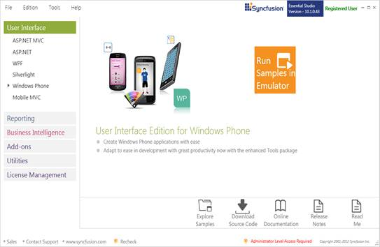
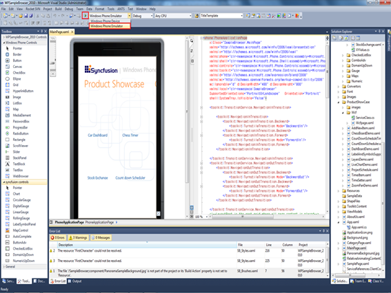
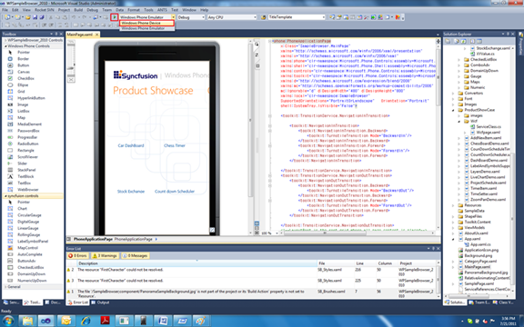
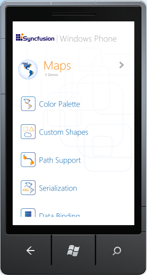

This section covers the location of the installed samples and describes the procedure to run the samples through the sample browser.
Sample Installation Location
The Essential Windows Phone samples are installed in the following location:
C:\Program Files (x86)\Syncfusion\Essential Studio\<Version Number>\Samples\Windows Phone\
Viewing Samples
The following are the steps to view the samples:
1. Click Start > All Programs > Syncfusion > Essential Studio x.x.x.x >Dashboard.
2. Select User Interface > Windows Phone.

Figure 1: Syncfusion Essential Studio Dashboard
3. Click Run Samples in Emulator. This will run the Essential Studio Windows phone Edition sample browser in the Emulator.
 Note: The Run Samples in
Emulator option will be available in the Dashboard only when all prerequisites
for Essential Windows Phone are installed in your machine.
Note: The Run Samples in
Emulator option will be available in the Dashboard only when all prerequisites
for Essential Windows Phone are installed in your machine.
Running the samples from Visual Studio
You can also run the samples in Visual Studio.
The follow are the steps to run the samples from Visual Studio:
1. Open Syncfusion Dashboard.
2. Select User Interface > Windows Phone.
Figure 2: Syncfusion Dashboard
3. Click Explore Samples. This locates the Windows Phone samples on the disk.
4. Open the sample in Visual Studio.
5. Select the deployment type as Device or Emulator as needed.
· To deploy in Emulator, select Windows Phone Emulator.

Figure 3: Deploy in Emulator
· To deploy in Device, select Windows Phone Device.

Figure 4: Deploy in Device
6. Run the application. The Essential Studio Windows phone Edition sample browser will open.

Figure 5: Windows Phone Sample Browser
7. Click Maps. The Maps samples will open.

Figure 6: Maps Sample Browser
8. Select the samples and browse through the features.